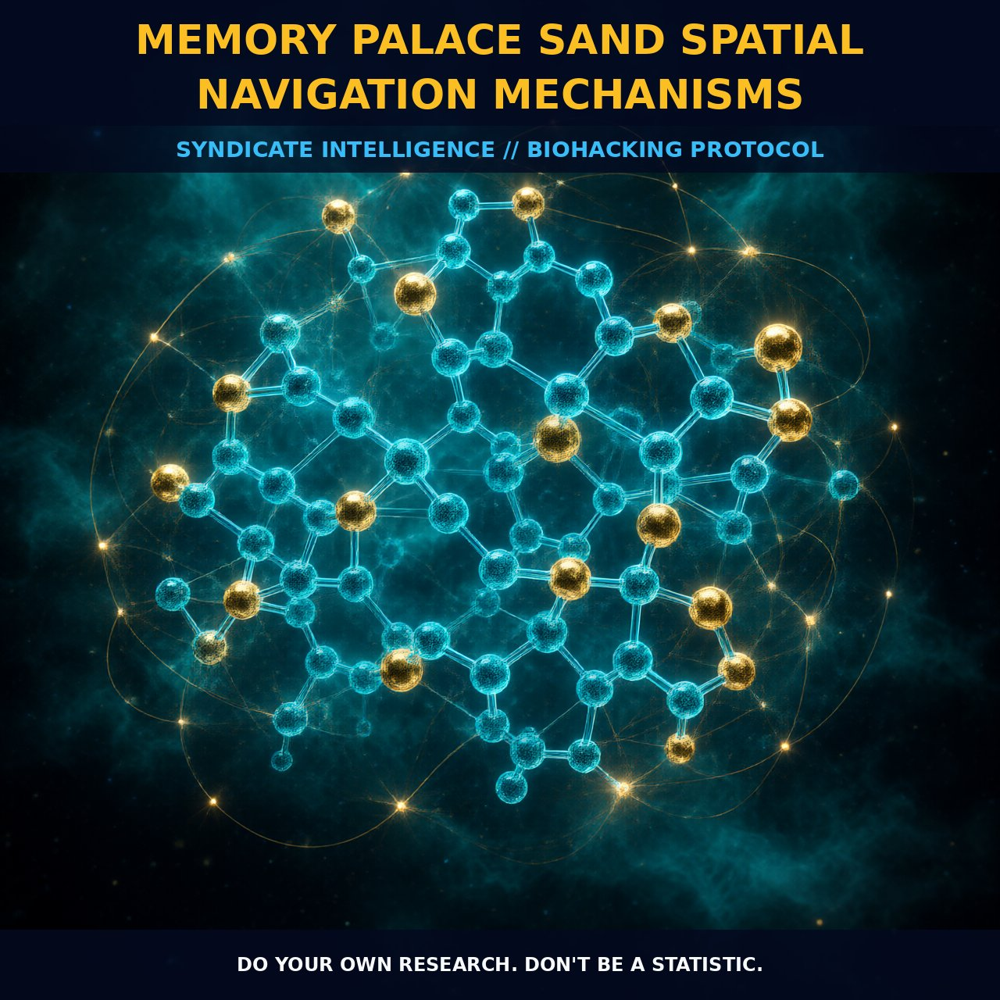

Neural Foundations of Memory Palaces and Spatial Navigation

1. The Mechanism
Memory palaces and spatial navigation are cognitive techniques that harness the activation and modulation of specific neural pathways. The hippocampus, a critical region for memory formation and consolidation, especially for spatial navigation, lies at the heart of these mechanisms. This region operates in concert with the entorhinal cortex and the parahippocampal gyrus to encode and retrieve spatial information. The hippocampus is also well-known for its role in generating theta waves during REM sleep and other states of neural activity, which facilitate the consolidation of memories.
The formation of engrams, physical changes in neural pathways and synaptic connections, is a key process in the formation of long-term memories. Engrams are distributed throughout the cortex and are formed through the process of long-term potentiation (LTP), which involves the strengthening of synaptic connections over time. The activation of the NMDA receptor, triggered by glutamate release, initiates a cascade of cellular events that lead to the influx of calcium ions (Ca2+) into the neuron. This influx of Ca2+ activates protein kinase C (PKC), which plays a crucial role in the modulation of synaptic plasticity and the enhancement of learning and memory processes.
2. Biological Leverage
The biological mechanisms underlying memory palaces and spatial navigation involve intricate signaling pathways and neurotransmitter interactions. One critical pathway involves the cholinergic system, essential for cognitive functions. Acetylcholine (ACh) acts on nicotinic ACh receptors to enhance cognitive performance, including short-term memory and attention. The activation of the cholinergic system can be further enhanced through the use of natural nootropics that modulate the release of ACh or its receptor activity. This modulation of the cholinergic system supports synaptic plasticity and the formation of engrams, thereby enhancing the encoding and retrieval of spatial information.
Another key biological leverage point lies in the glutamatergic signaling pathways, central to synaptic plasticity and the formation of long-term potentiation (LTP). The activation of NMDA and AMPA receptors by glutamate is crucial for the induction of LTP, as it leads to the influx of Ca2+ into the postsynaptic neuron. This influx of Ca2+ triggers a series of intracellular cascades, including the activation of Ca2+/calmodulin-dependent protein kinase II (CaMKII), which plays a pivotal role in the stabilization of synaptic changes and the enhancement of synaptic strength. Additionally, the localization of PKC to specific subcellular sites, facilitated by the influx of Ca2+, further supports the consolidation of spatial memories by enhancing synaptic plasticity.
3. Tactical Implementation
To effectively implement memory palace techniques and enhance spatial navigation, it is essential to understand the dosage and timing of nootropic compounds that modulate the cholinergic and glutamatergic systems. For example, cholinergic enhancers such as huperzine A or acetylcholine esterase inhibitors can be used to increase the availability of ACh in the synaptic cleft, thereby enhancing cognitive performance. These compounds are typically dosed at low-to-moderate amounts, such as 50-200 micrograms for huperzine A, to achieve optimal cognitive benefits without inducing side effects.
Similarly, glutamatergic modulators such as noopept or piracetam can be used to enhance the activation of NMDA and AMPA receptors, leading to increased synaptic plasticity and improved spatial memory. These compounds are generally dosed at moderate levels, such as 10-30 mg for noopept and 800-1600 mg for piracetam, to optimize their effects on cognitive functions. It is also beneficial to stack these nootropics with other compounds such as phosphatidylserine or vitamin B6, which support the integrity of neuronal membranes and enhance the synthesis of neurotransmitters, respectively.
Timing the administration of these nootropics can further enhance their efficacy. For instance, taking cholinergic enhancers in the morning can support cognitive performance throughout the day, while glutamatergic modulators can be taken in the afternoon or early evening to promote the formation and consolidation of spatial memories. Additionally, engaging in activities that require high-level proprioception, such as climbing or playing musical instruments, can further enhance the formation of engrams and improve spatial navigation abilities.
Prostar Life Hack
Stack cholinergic enhancers like huperzine A with glutamatergic modulators like noopept to enhance spatial memory and navigation. Take huperzine A in the morning and noopept in the afternoon for optimal cognitive benefits.
[ AUTHOR: LEAD TECHNICAL RESEARCHER ]